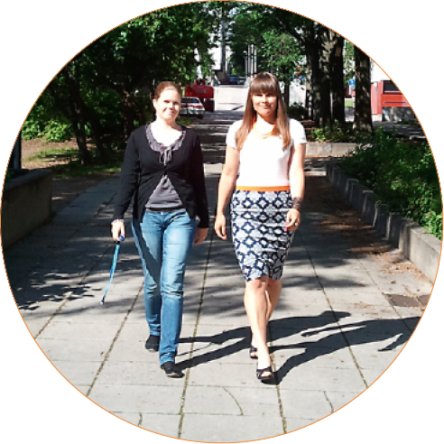

Teksti Petja Partanen
Helsingin seudun ympäristöpalvelut HSY julkaisi tiedot pääkaupunkiseudun asukkaista ja rakennuskannasta 500x500 metrin ruutuina kaikkien käyttöön.
HSY:n paikkatietoasiantuntija Henna-Kaisa Räsänen esittelee Helsingin yliopiston opiskelijoiden analyysejä kevään harjoituskursseilta. Maantieteilijät penkoivat HSY:n avaamaa dataa. Visualisoinnit vastaavat moniin kysymyksiin. Missä asutaan väljästi, missä ahtaasti? Missä piilevät Helsingin seudun rakentamattomat tontit? Asiantuntijoiden käsissä loputon numeromassa muuttuu arvokkaaksi tiedoksi.
Räsäsen kollega Suvi Uotila kertoo, että hänen opiskellessaan 2000-luvun puolivälissä tästä vain haaveiltiin.
“Jouduimme itse keksimään datat, joilla harjoitustyöt tehtiin. Avointa paikkatietoa ei ollut olemassa.”
Nyt on, kiitos pääkaupunkiseudun paikkatietoaineistoja ylläpitävän HSY:n datajulkaisujen. Eräs HSY:n ylläpitämistä tietoaineistoista on pääkaupunkiseudun kuntien Seudullinen Perusrekisteri SePe. Kahden viikon välein päivittyvä paikkatietoaineisto palvelee seudun suunnittelijoita ja tutkijoita. Kun pari vuotta sitten käynnistyneen HRI-hankkeen vetäjät ehdottivat tietojen avaamista kaikelle kansalle, Räsänen ja Uotila olivat innolla mukana.
Ensimmäinen datajulkaisu tehtiin joulukuussa 2011. Aluksi ongelmana oli liian tarkka data: rekisterissä on tieto esimerkiksi joka ainoasta pääkaupunkiseudun rakennuksesta. Tietosuojan turvaamiseksi koneluettavaksi tarkoitettua avodataa piti yleistää.
Nyt odotellaan, mitä data-avauksen tuloksena syntyy. Aineistoa on jo käytetty yliopistokurssin harjoitustyömateriaalina ja presidentinvaalien tulosten visualisoinneissa.
HSY:n avoin data

HSY:n avoin data sisältää kolme pääkaupunkiseudun kunnat kattavaa, vuosittain päivitettävää aineistoa: rakennustietoruudukko, väestötietoruudukko ja seudullinen rakennusmaavaranto. Ruudukkoaineistojen ruudut ovat kooltaan 500 x 500 metriä. Paikkatietoaineistot voi ladata ilmaiseksi MapInfo (tab ja mif/mid) ja Esrin shape -muodossa.
•
Teoksen tekstit on lisensoitu HRI-nimeä -lisenssillä. Teoksen uudelleenkäytön yhteydessä pitää mainita sekä tekstin kirjoittaja (Petja Partanen tai Terhi Upola) että rahoittaja (Helsinki Region Infoshare -palvelu).
Näin data avattiin
Syksy 2009 Ensimmäinen ajatus datan avaamisesta.
2010 HRI-hanke käynnistyy, sen vetäjät kannustavat HSY:n datavarantojen avaamiseen.
Kevät 2011 Pekka Vuori HRI-hankkeesta käy esittelemässä ajatusta kuntien seudullisessa
rekisteriyhteistyöryhmässä. Säännölliset tapaamiset HRI:n asiantuntijoiden kanssa alkavat.
Syksy 2011 Suunnittelu etenee data-avauksen käytännön yksityiskohtiin.
Joulukuu 2011 Ensimmäinen datasetti julki, vuoden 2010 asukastiedot, rakennuskanta ja rakennusmaavaranto.
Kevät 2012 Tarjonta laajenee, aikasarjat vuosilta 1997-2011. Avointa dataa hyödynnetään Helsingin yliopiston paikkatietokurssilla.
Datan avaajat

Suvi Uotila ja Henna-Kaisa Räsänen
HSY:n paikkatietoasiantuntijat
Toteuttaja
HSY
Kustannukset
“70 työpäivää.”
Vinkit perässä tuleville
1. “Aloita pienestä, ei saa ahnehtia liikaa.”
2. “Pyri kartoittamaan datan käyttäjien toiveita etukäteen.Mene mukaan sovelluskehittäjien tapaamisiin.”
3. “Ole hereillä sosiaalisessa mediassa. Seuraa palautteita ja keskustelua. Itse liityin Twitteriin seuratakseni avoimen datan aiheita. Se on Facebookiakin aktiivisempi kanava, open data -hashtagilla löytyy paljon keskustelua.“
Odotukset data-avaukselle?
“Odotuksena on että tutkijat saavat helpommin sopivia aineistoja käyttöön ja aineistokyselyt meille vähenevät.”
Mitä dataa toivoisitte avattavaksi?
Kuntien tarkkoja kantakarttoja, joita käytetään kaavoituksen pohjana. “Se hyödyttäisi oikeasti koko yhteiskuntaa.”
Miksi datan avaaminen on tärkeää?
“Opiskelu ja tutkimus saa aineistoa käyttöönsä, kansalaiset uutta tietoa ympäristöstään.”
Missä dataa käytetään?
Asuinalueiden ikä -visualisointi
Louhos-blogin kirjoittajat analysoivat HSY:n avointa dataa erilaisilla louhinta- ja visualisointityökaluilla. Esimerkiksi asuinalueen vanhimman rakennuksen rakennusvuosi kertoo karkeasti kaupunginosien ikäjakauman.
Maantieteen opiskelijoiden harjoitustyöt
Keväällä 2012 järjestetty harjoituskurssi Helsingin yliopiston geoinformatiikan laitoksella visualisoi ja analysoi HSY:n julkaisemaa avointa dataa.

Kaupunginosien ikäjakauma.
Vanhimman rakennuksen rakennusvuosi.